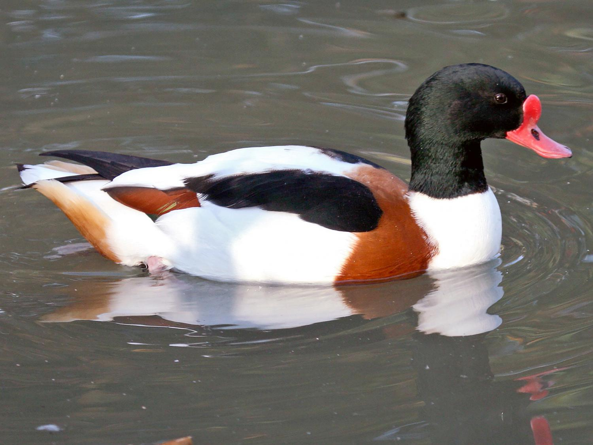

الشلندرةCommon Shelduck
Tadorna tadorna
مهاجرMigratory
تُعرف الشلندرة علميًا باسم Tadorna tadorna، وتنتمي إلى فصيلة البطيات (Anatidae) ضمن رتبة الإوزاويات (Anseriformes)، وهي من أكثر أنواع البط تميزًا في مظهرها، إذ يجمع ريشها بين الأبيض والأسود اللامع وحزام كستنائي عريض على الصدر، مع منقار أحمر زاهي يزداد بروزه عند الذكور في موسم التزاوج. هذا الطائر مهاجر (M) في العراق، إذ يفد إليه شتاءً من مناطق تكاثره في أوروبا وغرب آسيا، ويفضّل خلال إقامته البحيرات والمسطحات المائية المالحة أو شبه المالحة الضحلة والسهول الطينية الساحلية في جنوب العراق.
The Common Shelduck is scientifically known as Tadorna tadorna, belonging to the duck family (Anatidae) within the order Anseriformes. It is one of the most distinctively marked ducks, with plumage combining glossy white and black and a broad chestnut band across the chest, along with a bright red bill that becomes more prominent in males during the mating season. This bird is migratory (M) in Iraq, arriving in winter from its breeding grounds in Europe and western Asia, and during its stay it favors lakes, shallow saline or brackish water bodies, and coastal mudflats in southern Iraq.
تصنَّف الشلندرة ضمن الأنواع غير المهددة (Least Concern) وفق الاتحاد الدولي لحفظ الطبيعة، بفضل استقرار أعدادها العالمية. وتسهم الشلندرة في النظام البيئي العراقي عبر تغذيتها على الرخويات الصغيرة والقشريات والديدان الموجودة في الطين، ما يساعد في ضبط أعداد اللافقاريات القاعية في الموائل الطينية، ويُعد وجودها في مناطق معينة مؤشرًا على غنى هذه البيئات بالحياة اللافقارية الدقيقة.
The Common Shelduck is classified as Least Concern by the IUCN, thanks to its stable global population. It contributes to Iraq's ecosystem by feeding on small mollusks, crustaceans, and worms found in the mud, helping regulate benthic invertebrate populations in muddy habitats, and its presence in certain areas indicates the richness of these environments in microscopic invertebrate life.